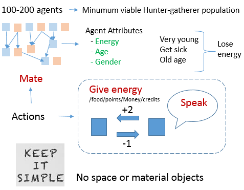
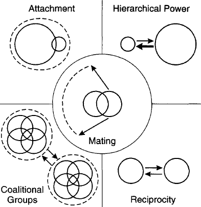

Also: commonsense ( time, causal, etc)
Today: DL, commonsense does not scale (). suggest (tenenbaum, Gary Marcus)
Proposal: New env social
Lang basic: semantic universal -> concret to abstract concepts -> by scenarios
E! commonsense ( datamining, crowdsource, hardcode)
Petaflops/s * day; $ ; skilled IA/ML developers; neuroscience
wkiki, slack, discord, IRQ, mattermost, BBN, forum, email, twitter, FB, ...
Finally, we recognize that some researchers still hold out hope that if only they can just get big enough training datasets, sufficiently rich tasks, and enough computing power -- far beyond what has been tried out so far -- then deep learning methods might be sufficient to learn representations equivalent to what evolution and learning provides humans with. We can sympathize with that hope and believe it deserves further exploration, although we are not sure it is a realistic one. We understand in principle how evolution could build a brain with the cognitive ingredients we discuss here. Stochastic hill-climbing is slow -- it may require massively parallel exploration, over millions of years with innumerable dead-ends -- but it can build complex structures with complex functions if we are willing to wait long enough. In contrast, trying to build these representations from scratch using backpropagation, deep Q-learning or any stochastic gradient-descent weight update rule in a fixed network architecture may be unfeasible regardless of how much training data are available. To build these representations from scratch might require exploring fundamental structural variations in the network's architecture, which gradient-based learning in weight space is not prepared to do. Although deep learning researchers do explore many such architectural variations, and have been devising increasingly clever and powerful ones recently, it is the researchers who are driving and directing this process. Exploration and creative innovation in the space of network architectures have not yet been made algorithmic. Perhaps they could, using genetic programming methods or other structure-search algorithms . We think this would be a fascinating and promising direction to explore, but we may have to acquire more patience than machine learning researchers typically express with their algorithms: the dynamics of structure-search may look much more like the slow random hill-climbing of evolution than the smooth, methodical progress of stochastic gradient-descent. An alternative strategy is to build in appropriate infant-like knowledge representations and core ingredients as the starting point for our learning-based AI systems, or to build learning systems with strong inductive biases that guide them in this direction. Building Machines That Learn and Think Like People
This raises the question of how humans might learn even more abstract tasks,and Bengio (2013b) studies the hypothesis that the use of language and the evolution of culture could have helped humans reduce that difficulty(...) The basic idea is that humans (and current learning algorithms) are limited to “local descent” optimization methods, that make small changes in the parameter values with the effect of reducing the expected loss in average. This is clearly prone to the presence of local minima, while a more global search (in the spirit of both genetic and cultural evolu tion) could potentially reduce this difficulty. One hypothesis is that more abstract learning tasks involve more challenging optimization difficulties, which would make such global optimization algorithms necessary if we want computers to learn such abstractions from scratch. Another option, following the idea of curriculum learning (Bengio et al., 2009), is to provide guidance ourselves to learning machines (as exemplified in the toy example of Gulcehre and Bengio (2013)), by “teaching them” gradually more complex concepts to help them understand the world around us (keeping in mind that we also have to do that for humans and that it takes 20 years to complete). Evolving Culture vs Local Minima, Y Bengio
The present code iteration used hard-coded naive heuristics of language use. The interactions use a json-like expression instead of a natural language.
The agents self-played for some time so they could learn models of the enviromnent, themselves and other agents. And also what to speak to influence each other. The results were inconclusive. Teams with access to thousands of Petaflop/s-days can try to do better.
Now is the hard work of implementing reasoning skills and teaching lessons whenever gradient descent is too slow.
Possible uses
A deeper system would provide a world filled with dynamic Machiavellian Plotters.(..)
If NPCs possessed social reasoning, then open-ended action games can be about power dyanmics. They may support strategies in which the player forges and betrays lasting relationships with NPCs instead of just shooting. Think of an interactive version of the Wire, House of cards or the Sopranos. These TV shows are about weaving and unweaving of complex interpersonal relationships as a means to na end. NPCs with innocuous beginnings could become regular companions, or grow into mortal enemies.(…)
One possible future for the open world game may be na experience that combnins the Sims, which features lifelong ambition arcs, with something like PromWeek,the fascinating project that simulate social interactions between students.
Video games where people matter? The strange future of emotional AI
An agent is a system that receives data from the world and acts on it. Intelligence is its ability to act purposefully towards some goal. It is difficult to say anything nontrivial about general intelligence in general. Marcus Hutter (2005) has demonstrated that a very simple algorithm called AIXItl can demonstrate arbitrarily high levels of general intelligence if given sufficiently immense computational resources. This is interesting because it shows that general intelligence is basically a problem of computational efficiency. Due to the harsh reality of computational resource restrictions, real-world general intelligences are necessarily biased to particular classes of environments. Human intelligence is geared toward the physical, social and linguistic environments in which humanity evolved; and one would expect intelligences of radically nonhuman systems (like present agents ?) to be highly biased toward their particular classes of environments in which they evolved. Goertzel, Ben and Allan Combs. [Water Worlds, Naive Physics, Intelligent Life, and Alien Minds]
An important observation is that most, if not all known facets of intelligence can be formulated as goal driven or, more precisely, as maximizing some utility function.(...) The major drawback of the AIXI model is that it is uncomputable, ... which makes an implementation impossible. To overcome this problem, we constructed a modified model AIXItl, which is still effectively more intelligent than any other time t and length l bounded algorithm. (---) AIXI captures “the major ideas of Bayes, Ockham, Epicurus, Turing, von Neumann, Bellman, Kolmogorov, and Solomonoff” in a single equation.
Related agents are the Godel Machine (rewrites itself), and hypothetical Bayesian and Logical Omniscient (knows all the consequences to its beliefs, has infinite computational resources).
The ideal agent approximation breaks down if the agent can manipulate itself as part of enviroment: may hijack input, operators, overheat, become drunkOf course, logical induction does not solve all the problems of reasoning under deductive limitation—far from it! They do not engage in meta-cognition (in the sense of Russell and Wefald [1991b]) to decide which facts to reason about next, and they do not give an immediate practical tool (as in the case of probabilistic integration [Briol, Oates, Girolami , Osborne, and Sejdinovic 2015]), and they have abysmal runtime and uncomputable convergence bounds. It is our hope that the methods logical inductors use to aggregate expert advice will eventually yield algorithms that are useful for various applications, in the same way that useful ensemble methods can be derived from Solomonoff’ s theory of inductive inference.
The human goal-system, which includes survival, social status, and morality, along with many others, is a mix of adaptations to conditions in the human ancestral environment
BUT
Even though the human mind evolved to serve evolutionary goals of reproductive success, humans do not share the goals of the evolutionary processes which created them (Tooby and Cosmides 1992; J. D. Greene 2002).
The environment used to explore the human psychology and how it evolved
The default environment is a bare-bones representation of aspects from the environment where our ancestors lived and where our behavior evolved: small groups, foraging, sharing food. In principle we would not implement matarial obejcts;
More concretely, it is a hypothetical land with enough food to support some 200 agents. Each agent has a gender, age and level of energy, that inreases by eating and decreases with age and sickness. If the energy reaches 0 the agent dies.
At each step the agents can take these actions:

There is a probability that private actions of other agents will be discovered by an random agent, leading eventually to gossip.
Our environment will lead to interpersonal competiiton as a driver for interesting phenomena . The amount of food is limited and thea gents have to compete for mates, feed theis children and relate to peers and kin They can forage food, give or hit (remove) energy to/from other agents, and mate leading to offsring. Agents may have inheritable fitness AttMate and psychological characteristics.
While we could evolve these algorithmes, to lessen computational costs the instints drives(feed, mate, help kin and offspring, make friends etc), and emotions(happiness, sadness, fear, anger, surprise etc) will be to some extent hardcoded.

Algorithms of Social Life:
The author surveys the kinds of relationship
and their algorithmic, evolutionary and neural/hormonal contexts.
The agents need to cooperate to forage the food and decide how to share it. As the food is limited, competition arises between them. They should decide how to allocate it between kin, mates and friends, and avoid or win conflicts.
Every human bears the whole stamp of the human condition. This includes evolved neural programs specialized for navigating the world of coalitions—teams, not groups. These programs enable us and induce us to form, maintain, join, support, recognize, defend, defect from, factionalize, exploit, resist, subordinate, distrust, dislike, oppose, and attack coalitions. John Tooby
The use of a large population > 100, allows to explore the psychology of coalition-forming.
They reproduce sexually, transmiting genes that control their behavior ( or use the number of grandchildren as a proxy to fitness to calculate gradientes for updating a neural network). So acquiring mates, childcare and building relationhips become crucial.
Much of human life´s meaning arguably depends on the enjoyment, for its own sake, of humor,love, game-playing, art,sex, dancing, social conversation, philosophy, literature, scientific discovery, sport, food and drink, friendship and parentingPossible implementation
Fly over a sunny scenario using webgl
Evolve faces using GAN (better with GPU)
Using GPT-2 to generate movie summaries
Python program to calculate configurations of LEGO-like bricks
Download a Very Bold font (free)
.
The famous blocksworld of AI --- Zip file to generate it using POV
{kind=link}
{kind=link}